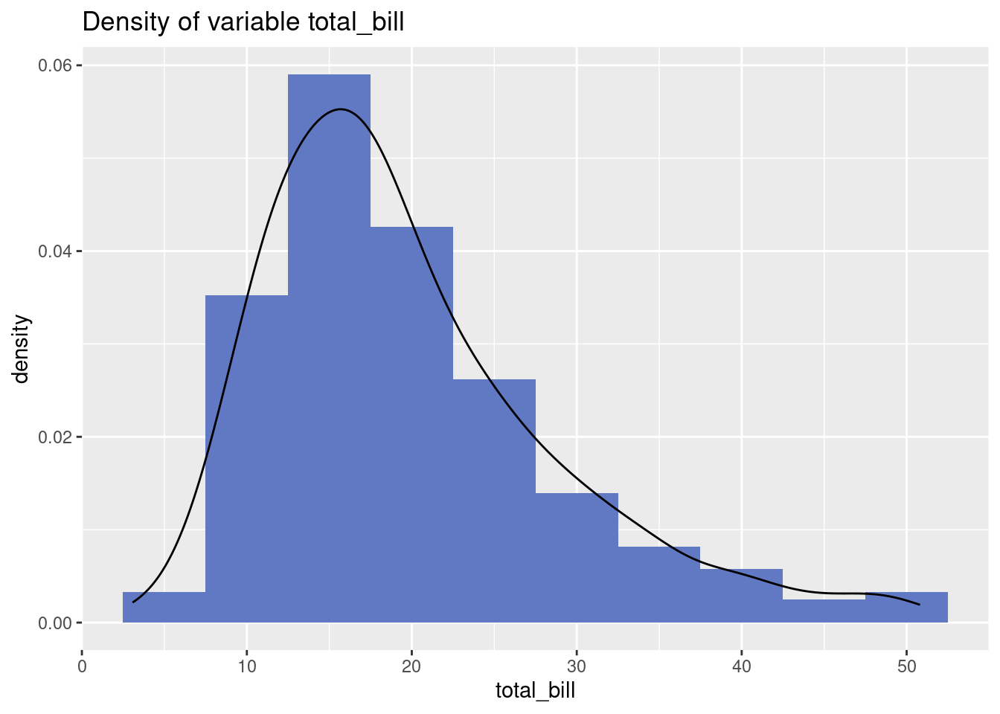
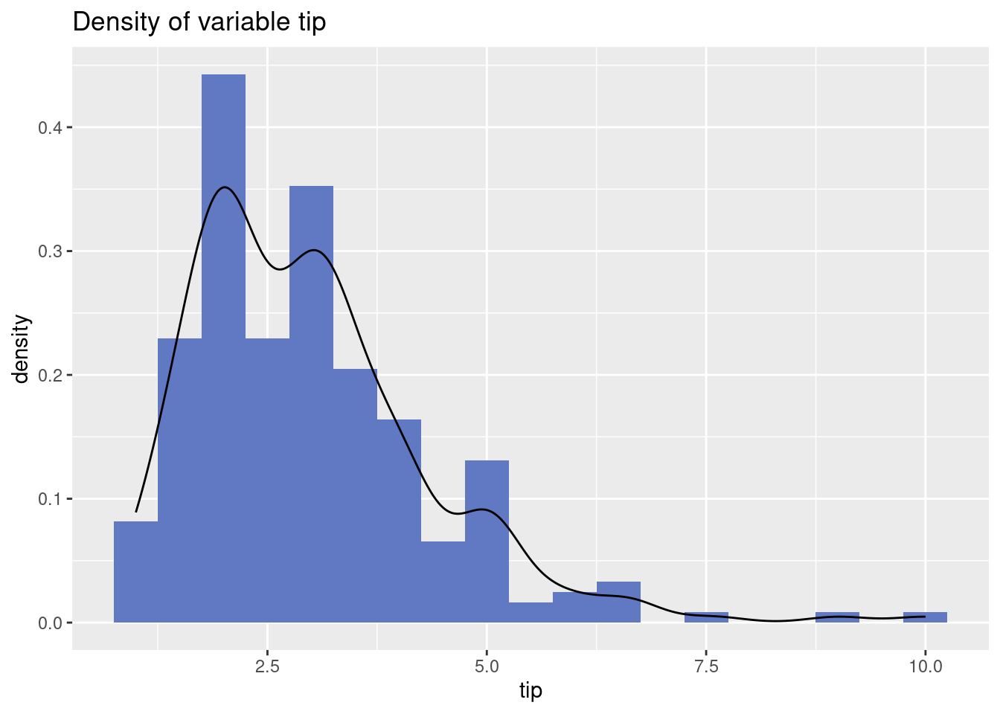
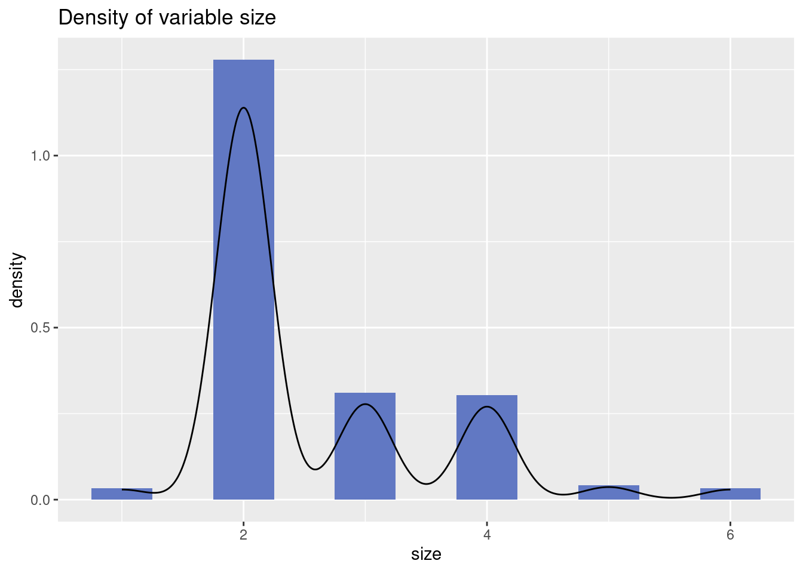
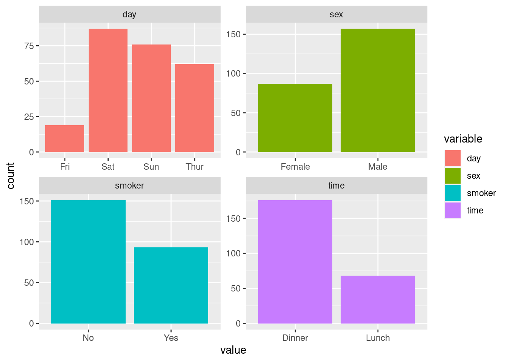
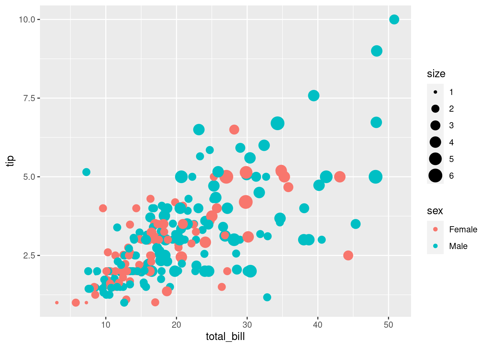
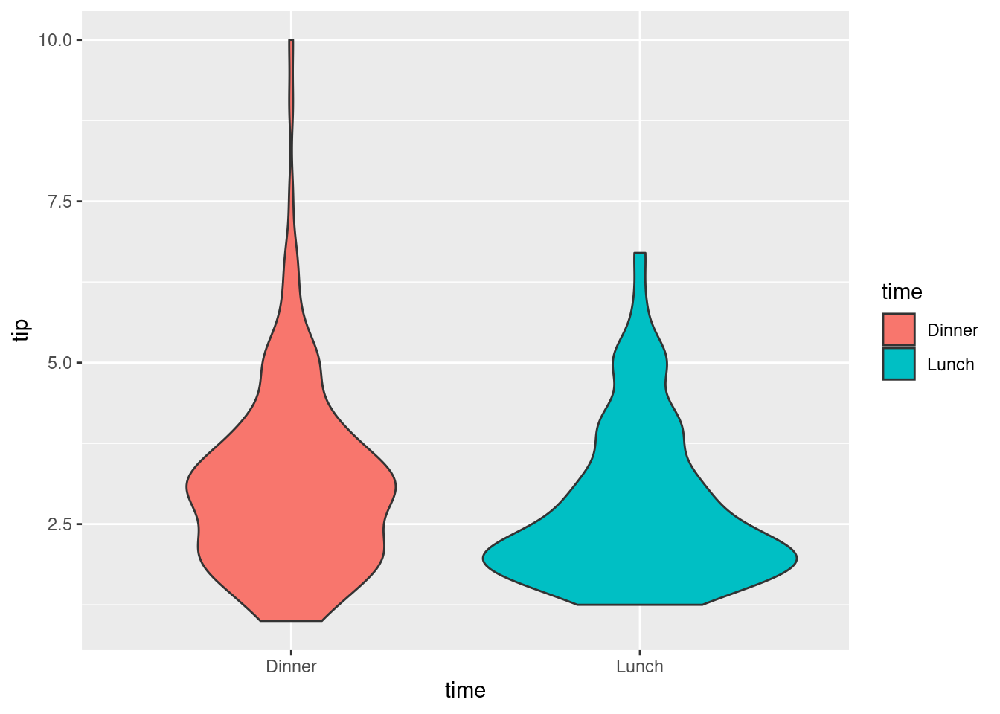
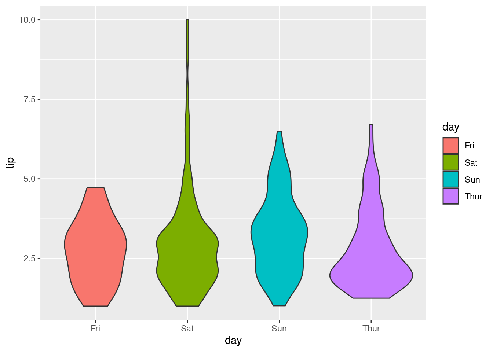

library(tidyverse)
library(magrittr)Tips_dataset
Imagine you are the waiter at a restaurant and want to estimate the tip based on the meal and some other characteristics. The goal of this project is to build linear models to predict
tipsbased on characteristics of the meals. Use Root Mean Squared Error (RMSE) as the metric of error. We are looking for the model with lowest RMSE on thetesingdata.
Loading some important libraries
Importing dataset
We will use the dataset tips and for more information, read: tips documentation.
tip <- read_delim('https://raw.githubusercontent.com/mwaskom/seaborn-data/master/tips.csv',
show_col_types = FALSE)In order to work on the project, you should follow the following steps:
- Study the distribution of each variable. Trying to understand them by computing some statistics: mean, variance, … and plot some graphics.
To do this, we can use, for example, function sumtable() from vtable package. We will look at quantitative and qualitative data separately.
Quantitative variables
# install.packages("vtable")
library(vtable)
# numerical variables
tip %>%
select(is.numeric) %>%
sumtable()| Variable | N | Mean | Std. Dev. | Min | Pctl. 25 | Pctl. 75 | Max |
|---|---|---|---|---|---|---|---|
| total_bill | 244 | 20 | 8.9 | 3.1 | 13 | 24 | 51 |
| tip | 244 | 3 | 1.4 | 1 | 2 | 3.6 | 10 |
| size | 244 | 2.6 | 0.95 | 1 | 2 | 3 | 6 |
The values above can be represented graphically as below. To understand a single numerical variable, density function, histogram, boxplot or violinplot are the suitable types of graphic.
# function that plot density on top of histogram
plot_density <- function(variable = "",
bandwidth = 1, color = "gray"){
tip %>%
select(is.numeric) %>%
ggplot(aes(x = .data[[variable]])) +
geom_histogram(aes(y = after_stat(density)),
binwidth = bandwidth,
fill = color) +
geom_density() +
labs(title = paste0("Density of variable ", variable)) -> p
show(p)
}
tip %>%
select(is.numeric) %>%
colnames() %>%
map2(.y = c(5, 0.5, 0.5),
.f = ~ plot_density(.x, .y, color = "#6178C3")) -> temp


Most of the bills are around \(\$15\) and can be up to more than \(\$50\) for a very few cases. On the other hand, the tips are mostly around \(\$2\) and only a few tips are higher than \(\$7.5\), while the highest bill is \(\$10\). Note that these high tips can be considered as outliers as majority of tips are less than \(\$5\). One might remove them when trying to build the model (before splitting the data into test and train).
Qualitative variables
# categorical data
tip %>%
select(!is.numeric) %>%
sumtable()| Variable | N | Percent |
|---|---|---|
| sex | 244 | |
| ... Female | 87 | 36% |
| ... Male | 157 | 64% |
| smoker | 244 | |
| ... No | 151 | 62% |
| ... Yes | 93 | 38% |
| day | 244 | |
| ... Fri | 19 | 8% |
| ... Sat | 87 | 36% |
| ... Sun | 76 | 31% |
| ... Thur | 62 | 25% |
| time | 244 | |
| ... Dinner | 176 | 72% |
| ... Lunch | 68 | 28% |
Distribution of each categorical variable.
tip %>%
select(!is.numeric) %>%
pivot_longer(cols = everything(),
names_to = "variable",
values_to = "value") %>%
ggplot(aes(x = value)) +
geom_bar(aes(fill = variable)) +
facet_wrap(~ variable, scales = "free")
Most meals took place on Saturday and less than \(20\) meals took places on Friday, while majority of the meals are dinner. Moreover, according to the observations, males often pay for the meal while majority of individuals are non-smoker.
- Study the relation of each predictors to the target
tips(statistically and graphically). Base on your investigation up to this stage, can you guess what variables are important to predict the tips?
tip |>
select(where(is.numeric)) %>%
cor() total_bill tip size
total_bill 1.0000000 0.6757341 0.5983151
tip 0.6757341 1.0000000 0.4892988
size 0.5983151 0.4892988 1.0000000tip %>%
ggplot(aes(x = total_bill,
y = tip)) +
geom_point(aes(size = size, color = sex)) # lot of info
tip %>%
ggplot(aes(x = time,
y = tip)) + # quantitative vs quality
geom_violin(aes(fill = time))
tip %>%
ggplot(aes(x = day,
y = tip)) +
geom_violin(aes(fill = day))
The correlation matrix shows that the total bill is highly correlated with the tip, while size of the meal also carries correlation close \(0.5\) with tip as well. However, it is worth noticing that the two numerical inputs are also highly correlated which indicates that both of them might be redundant inputs in modeling tip.
The scatterplot conveys many information that the tips higher than \(\$7\) are often accured for meal that are paid by males. For the lower tips, there is no different or relation between Gender and tips at all according to the scatterplot. The same thing can be observed between
tipandsize. Finally, the violinplots show thattypeanddayof meals do not play significant role in characterizing tips either.
- Build linear models based on your choice of inputs using
lmfunction. The model should be trained on the training data and predict the testing data as defined below.
- Base on the previous investigation, we might try a few models:
- a model with all inputs
- a step subset search
- a model with only total bill
- a model with higher degree of total bill
n <- nrow(tip)
train <- logical(n)
set.seed(168) # This will fix the train-test split. You will have the same train and test data
train[sample(n, 0.8*n)] <- TRUE
tip_train <- tip[train,] # Train data
tip_test <- tip[!train,] # Test datafull_model <- lm(tip ~ .,
data = tip_train)
step_model <- step(full_model,
direction = "both")Start: AIC=42.08
tip ~ total_bill + sex + smoker + day + time + size
Df Sum of Sq RSS AIC
- day 3 0.482 221.11 36.507
- time 1 0.001 220.63 40.083
- smoker 1 0.014 220.65 40.094
- sex 1 0.445 221.08 40.475
<none> 220.63 42.082
- size 1 2.426 223.06 42.214
- total_bill 1 81.378 302.01 101.305
Step: AIC=36.51
tip ~ total_bill + sex + smoker + time + size
Df Sum of Sq RSS AIC
- smoker 1 0.003 221.12 34.510
- time 1 0.236 221.35 34.715
- sex 1 0.330 221.44 34.798
<none> 221.11 36.507
- size 1 2.666 223.78 36.844
+ day 3 0.482 220.63 42.082
- total_bill 1 81.107 302.22 95.441
Step: AIC=34.51
tip ~ total_bill + sex + time + size
Df Sum of Sq RSS AIC
- time 1 0.234 221.35 32.717
- sex 1 0.330 221.45 32.800
<none> 221.12 34.510
- size 1 2.843 223.96 35.001
+ smoker 1 0.003 221.11 36.507
+ day 3 0.471 220.65 40.094
- total_bill 1 84.110 305.23 95.371
Step: AIC=32.72
tip ~ total_bill + sex + size
Df Sum of Sq RSS AIC
- sex 1 0.246 221.60 30.933
<none> 221.35 32.717
- size 1 2.856 224.21 33.216
+ time 1 0.234 221.12 34.510
+ smoker 1 0.002 221.35 34.715
+ day 3 0.704 220.65 38.095
- total_bill 1 88.151 309.50 96.083
Step: AIC=30.93
tip ~ total_bill + size
Df Sum of Sq RSS AIC
<none> 221.60 30.933
- size 1 2.927 224.52 31.492
+ sex 1 0.246 221.35 32.717
+ time 1 0.151 221.45 32.800
+ smoker 1 0.001 221.60 32.932
+ day 3 0.501 221.10 36.492
- total_bill 1 88.579 310.18 94.508total_bill_model <- lm(tip ~ total_bill,
data = tip_train)
higher_model <- lm(tip ~ total_bill + size + I(total_bill ^2),
data = tip_train)
all_models <- list(full_model,
step_model,
total_bill_model,
higher_model)We shall look at the summary of all the models to have a glimpse of how they perform on the training data.
all_models %>%
map(.f = summary)[[1]]
Call:
lm(formula = tip ~ ., data = tip_train)
Residuals:
Min 1Q Median 3Q Max
-2.9110 -0.6142 -0.1210 0.4874 4.0965
Coefficients:
Estimate Std. Error t value Pr(>|t|)
(Intercept) 1.00447 0.45193 2.223 0.0274 *
total_bill 0.09289 0.01121 8.283 2.32e-14 ***
sexMale -0.10376 0.16943 -0.612 0.5410
smokerYes -0.01856 0.17390 -0.107 0.9151
daySat -0.15549 0.39863 -0.390 0.6969
daySun -0.06257 0.40709 -0.154 0.8780
dayThur -0.18190 0.52944 -0.344 0.7316
timeLunch -0.01677 0.57582 -0.029 0.9768
size 0.15244 0.10660 1.430 0.1544
---
Signif. codes: 0 '***' 0.001 '**' 0.01 '*' 0.05 '.' 0.1 ' ' 1
Residual standard error: 1.089 on 186 degrees of freedom
Multiple R-squared: 0.444, Adjusted R-squared: 0.4201
F-statistic: 18.56 on 8 and 186 DF, p-value: < 2.2e-16
[[2]]
Call:
lm(formula = tip ~ total_bill + size, data = tip_train)
Residuals:
Min 1Q Median 3Q Max
-2.9760 -0.6143 -0.0993 0.5393 4.0355
Coefficients:
Estimate Std. Error t value Pr(>|t|)
(Intercept) 0.79732 0.22824 3.493 0.000592 ***
total_bill 0.09217 0.01052 8.761 1.01e-15 ***
size 0.16140 0.10135 1.593 0.112911
---
Signif. codes: 0 '***' 0.001 '**' 0.01 '*' 0.05 '.' 0.1 ' ' 1
Residual standard error: 1.074 on 192 degrees of freedom
Multiple R-squared: 0.4415, Adjusted R-squared: 0.4357
F-statistic: 75.9 on 2 and 192 DF, p-value: < 2.2e-16
[[3]]
Call:
lm(formula = tip ~ total_bill, data = tip_train)
Residuals:
Min 1Q Median 3Q Max
-3.2003 -0.6074 -0.0990 0.5460 3.7902
Coefficients:
Estimate Std. Error t value Pr(>|t|)
(Intercept) 1.011498 0.185143 5.463 1.43e-07 ***
total_bill 0.102309 0.008407 12.169 < 2e-16 ***
---
Signif. codes: 0 '***' 0.001 '**' 0.01 '*' 0.05 '.' 0.1 ' ' 1
Residual standard error: 1.079 on 193 degrees of freedom
Multiple R-squared: 0.4342, Adjusted R-squared: 0.4312
F-statistic: 148.1 on 1 and 193 DF, p-value: < 2.2e-16
[[4]]
Call:
lm(formula = tip ~ total_bill + size + I(total_bill^2), data = tip_train)
Residuals:
Min 1Q Median 3Q Max
-2.9649 -0.6226 -0.0885 0.5421 3.9713
Coefficients:
Estimate Std. Error t value Pr(>|t|)
(Intercept) 0.8601978 0.4084715 2.106 0.0365 *
total_bill 0.0855620 0.0370788 2.308 0.0221 *
size 0.1643829 0.1028646 1.598 0.1117
I(total_bill^2) 0.0001270 0.0006837 0.186 0.8528
---
Signif. codes: 0 '***' 0.001 '**' 0.01 '*' 0.05 '.' 0.1 ' ' 1
Residual standard error: 1.077 on 191 degrees of freedom
Multiple R-squared: 0.4416, Adjusted R-squared: 0.4329
F-statistic: 50.36 on 3 and 191 DF, p-value: < 2.2e-16By looking at R-squared, one can feel how does the model perform on the training data. Also, we can look at which variable are significant in those cases. Remember that this is just the performance of the model on the data it was built. Now let’s look at the performance of the models on the testing data.
name <- c("MSE of full model: ",
"MSE of stepwise model: ",
"MSE of model with only total bill: ",
"MSE of model of higher degree model: ")
map2(name,
all_models,
.f = function(x, y){
return(paste0(x, mean((tip_test$tip - predict(y, tip_test))^2)))
})[[1]]
[1] "MSE of full model: 0.556772473784954"
[[2]]
[1] "MSE of stepwise model: 0.54202970535065"
[[3]]
[1] "MSE of model with only total bill: 0.586724119095905"
[[4]]
[1] "MSE of model of higher degree model: 0.542366036270941"The result suggested that the stepwise model with only two inputs:
sizeandtotal_billare the best one among all the constructed models.Later, we will learn how to control the coefficients of the model to a limited range and that can play an important rule in improving model performance.